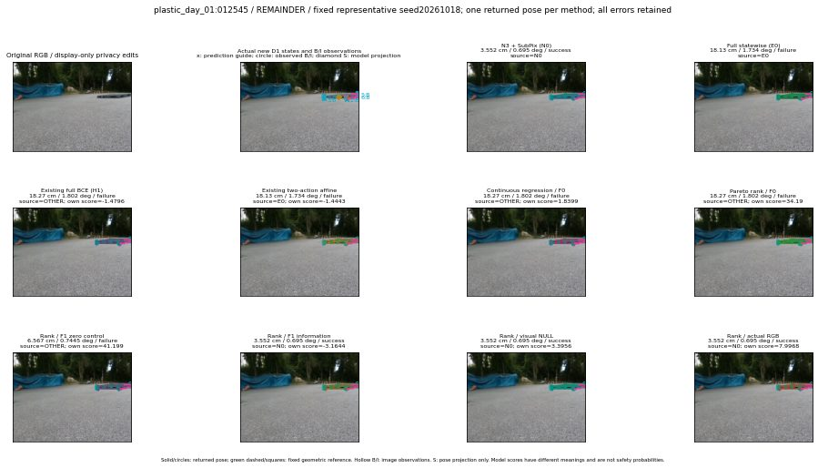

실선은 반환 자세, 초록 점선은 고정 기하 참조입니다. S는 영상 관측이 아닙니다. 점수는 모델별 의미가 다르며 보정된 안전 확률이 아닙니다. 개인정보 처리는 표시 사본에만 적용했습니다.
| 방법·seed | 위치 / 회전 / 공동성공 | 실제 출처 | 선택 후보 | 각 모델 자체 점수 |
|---|---|---|---|---|
| N0 | 3.552 cm / 0.695 deg / success | N0 | N/A | N/A |
| E0 | 18.13 cm / 1.734 deg / failure | E0 | N/A | N/A |
| E0_REGENERATED | 18.13 cm / 1.734 deg / failure | E0 | E0_REGENERATED | N/A |
| POSEFIX_SUBPIX_PF_ANCHOR | 8.467 cm / 2.014 deg / failure | OTHER | N/A | N/A |
| POSEFIX_SUBPIX_YOLO_ANCHOR | 8.467 cm / 2.014 deg / failure | OTHER | N/A | N/A |
| D1_H1_MLP_s20261018 | 18.27 cm / 1.802 deg / failure | OTHER | WD0/ORIGINAL_WD/selected | -1.4795814752578735 |
| D1_H1_MLP_s20261019 | 18.27 cm / 1.802 deg / failure | OTHER | WD0/ORIGINAL_WD/selected | -1.5041946172714233 |
| D1_H1_MLP_s20261020 | 18.27 cm / 1.802 deg / failure | OTHER | WD0/ORIGINAL_WD/selected | -1.5804699659347534 |
| D1_H1_PAIR_MLP_s20261018 | 3.552 cm / 0.695 deg / success | N0 | N0 | -2.237980604171753 |
| D1_H1_PAIR_MLP_s20261019 | 18.13 cm / 1.734 deg / failure | E0 | E0_REGENERATED | -2.3036727905273438 |
| D1_H1_PAIR_MLP_s20261020 | 18.13 cm / 1.734 deg / failure | E0 | E0_REGENERATED | -2.657651662826538 |
| D1_H1_PAIR_ROLE_AFFINE_s20261018 | 18.13 cm / 1.734 deg / failure | E0 | E0_REGENERATED | -1.4442927837371826 |
| D1_H1_PAIR_ROLE_AFFINE_s20261019 | 18.13 cm / 1.734 deg / failure | E0 | E0_REGENERATED | -1.8346214294433594 |
| D1_H1_PAIR_ROLE_AFFINE_s20261020 | 3.552 cm / 0.695 deg / success | N0 | N0 | -1.3719382286071777 |
| R_CONT_F0_s20261018 | 18.27 cm / 1.802 deg / failure | OTHER | WD0/ORIGINAL_WD/selected | 1.8399128913879395 |
| R_CONT_F0_s20261019 | 18.27 cm / 1.802 deg / failure | OTHER | WD0/ORIGINAL_WD/selected | 1.7848565578460693 |
| R_CONT_F0_s20261020 | 18.27 cm / 1.802 deg / failure | OTHER | WD0/ORIGINAL_WD/selected | 1.4965224266052246 |
| R_ORDER_F0_s20261018 | 18.27 cm / 1.802 deg / failure | OTHER | WD0/ORIGINAL_WD/selected | 34.189857482910156 |
| R_ORDER_F0_s20261019 | 18.27 cm / 1.802 deg / failure | OTHER | WD0/ORIGINAL_WD/selected | 30.229732513427734 |
| R_ORDER_F0_s20261020 | 18.27 cm / 1.802 deg / failure | OTHER | WD0/ORIGINAL_WD/selected | -20.480968475341797 |
| R_ORDER_F1_ZERO_s20261018 | 6.567 cm / 0.7445 deg / failure | OTHER | P1/ORIGINAL_WD/selected | 41.19888687133789 |
| R_ORDER_F1_ZERO_s20261019 | 18.27 cm / 1.802 deg / failure | OTHER | WD0/ORIGINAL_WD/selected | 53.51709747314453 |
| R_ORDER_F1_ZERO_s20261020 | 18.13 cm / 1.734 deg / failure | E0 | E0_REGENERATED | 29.458080291748047 |
| R_ORDER_F1_s20261018 | 3.552 cm / 0.695 deg / success | N0 | N0 | -3.1643943786621094 |
| R_ORDER_F1_s20261019 | 18.23 cm / 1.741 deg / failure | OTHER | G10/ORIGINAL_WD/selected | 5.663934230804443 |
| R_ORDER_F1_s20261020 | 3.552 cm / 0.695 deg / success | N0 | N0 | 4.443742275238037 |
| V_ORDER_NULL_s20261018 | 3.552 cm / 0.695 deg / success | N0 | N0 | 3.395627975463867 |
| V_ORDER_NULL_s20261019 | 18.23 cm / 1.741 deg / failure | OTHER | G10/ORIGINAL_WD/selected | 2.1319289207458496 |
| V_ORDER_NULL_s20261020 | 6.567 cm / 0.7445 deg / failure | OTHER | P1/ORIGINAL_WD/selected | 13.44318962097168 |
| V_ORDER_RGB_s20261018 | 3.552 cm / 0.695 deg / success | N0 | N0 | 7.996799468994141 |
| V_ORDER_RGB_s20261019 | 18.23 cm / 1.741 deg / failure | OTHER | G10/ORIGINAL_WD/selected | 2.444056987762451 |
| V_ORDER_RGB_s20261020 | 23.74 cm / 85.76 deg / failure | OTHER | G13/SWAPPED_WD/selected | -1.6088913679122925 |